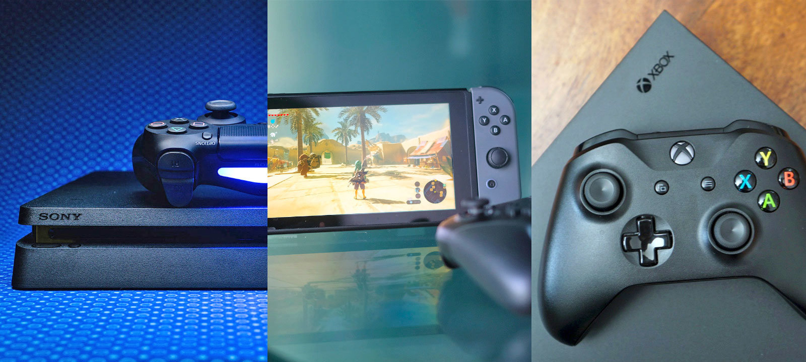

Gaming Platforms
PlayStation
PlayStation is a video game brand that consists of four home video game consoles, as well as a media center, an online service, a line of controllers, two handhelds and a phone, as well as multiple magazines. The brand is produced by Sony Interactive Entertainment, a division of Sony, with the first console releasing as the PlayStation in Japan released in December 1994, and worldwide the following year.
The original console in the series was the first console of any type to ship over 100 million units, doing so in under a decade. Its successor, the PlayStation 2, was released in 2000. The PlayStation 2 is the best-selling home console to date, having reached over 155 million units sold by the end of 2012. Sony's next console, the PlayStation 3, was released in 2006, selling over 87.4 million units by March 2017. Sony's latest console, the PlayStation 4, was released in 2013, selling a million units within a day, becoming the fastest selling console in history.
The next console in the series, the PlayStation 5, is expected to be released by the end of 2020.
X-box

Xbox is a video gaming brand created and owned by Microsoft. It represents a series of video game consoles developed by Microsoft, with three consoles released in the sixth, seventh, and eighth generations, respectively. The brand also represents applications (games), streaming services, an online service by the name of Xbox Live, and the development arm by the name of Xbox Game Studios. The brand was first introduced in the United States in November 2001, with the launch of the original Xbox console.
The original device was the first video game console offered by an American company after the Atari Jaguar stopped sales in 1996. It reached over 24 million units sold as of May 2006. Microsoft's second console, the Xbox 360, was released in 2005 and has sold 84 million units as of June 2014. The Xbox One has been released in 21 markets in total, with a Chinese release in September 2014. The head of Xbox is Phil Spencer, who succeeded former head Marc Whitten in late March 2014.
The Xbox Series X is an upcoming home video game console developed by Microsoft. It was announced during E3 2019 as "Project Scarlett" and is scheduled for release in late 2020. The console is one of the planned fourth-generation family of Xbox hardware, succeeding the current Xbox One line, and expected to have improved hardware for higher display resolutions and frame rate and reduced loading times. Microsoft plans to have this be a soft transition to its next generation of hardware; the Xbox Series X is expected to be fully compatible with all games, controllers, and accessories that are currently supported by Xbox One, including selected Xbox 360 and original Xbox games already backward compatible on the Xbox One. Further, Microsoft's internal Xbox Game Studios does not plan to immediately produce titles exclusive for the Xbox Series X, but instead will produce titles that are compatible on both the Xbox One and Xbox Series X, with certain titles having enhanced features on the new console.
Nintendo Switch

The Nintendo Switch is a video game console developed by Nintendo, released worldwide in most regions on March 3, 2017. It is a hybrid console that can be used as a home console and portable device. Its wireless Joy-Con controllers, with standard buttons and directional analog sticks for user input, motion sensing, and tactile feedback, can attach to both sides of the console to support handheld-style play. They can also connect to a grip accessory to provide a traditional home console gamepad form, or be used individually in the hand like the Wii Remote and Nunchuk, supporting local multiplayer modes.
The Nintendo Switch's software supports online gaming through Internet connectivity, as well as local wireless ad hoc connectivity with other consoles. Nintendo Switch games and software are available on both physical flash-based ROM cartridges and digital distribution via Nintendo eShop; the system has no region lockout. A handheld-focused revision of the system, called the Nintendo Switch Lite, was released on September 20, 2019.
▲